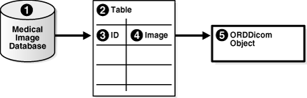
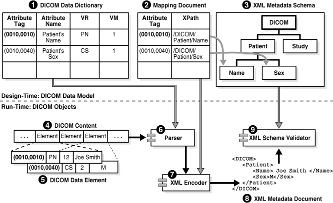
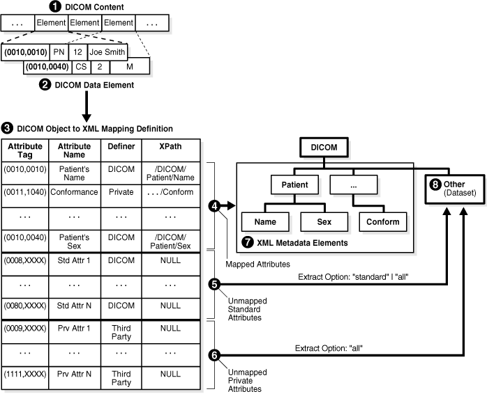

2 Oracle Multimedia DICOM Concepts
This chapter describes Oracle Multimedia DICOM at a conceptual level.
Note:
The Oracle Multimedia support for DICOM was deprecated in Oracle Database 12c Release 2 (12.2), and may be desupported in a future release. Oracle recommends that you stop using deprecated features as soon as possible.
This chapter includes these sections:
2.1 Oracle Multimedia DICOM Architecture
Oracle Multimedia DICOM enables Oracle Database to store, manage, and retrieve DICOM content such as single-frame and multiframe images, waveforms, slices of 3-D volumes, video segments, and structured reports.
The Oracle Multimedia DICOM architecture defines the framework through which DICOM content is supported in the database. This DICOM content can then be securely shared across multiple applications written with popular languages and tools, easily managed and administered by relational database management and administration technologies, and offered on a scalable database that supports thousands of users.
The following figure illustrates the Oracle Multimedia DICOM architecture from the database perspective.
Figure 2-1 Oracle Multimedia DICOM Architecture

Description of "Figure 2-1 Oracle Multimedia DICOM Architecture"
Using Oracle Multimedia DICOM, Oracle Database holds DICOM content in tables. As illustrated, DICOM content stored in a column of a table can include DICOM data such as X-rays, ultrasound images, and magnetic resonance images. In the table, a separate column stores a JPEG thumbnail image of the DICOM image. Another column stores the XML metadata documents associated with each image. Within a Java Virtual Machine (JVM), there is a server-side DICOM data model repository and a DICOM parser, a DICOM XML encoder, a DICOM conformance validator, and an image processor. The DICOM parser extracts metadata from DICOM content. The DICOM XML encoder maps the extracted DICOM attributes into an XML document, in accordance with the mapping rules defined in the data model repository. The DICOM conformance validator checks the syntactical and semantic consistency of DICOM content in accordance with the constraint rules specified in the data model repository. The image processor provides image processing for operations such as producing thumbnail-size images and converting between DICOM and other supported image formats.
Using Oracle Multimedia DICOM procedures and methods enables import and export operations between the database and external file storage systems. The double-sided arrow connecting Oracle Database with External File Storage shows this data movement.
See Also:
-
Oracle Multimedia User's Guide for a view and description of the complete architecture for Oracle Multimedia
2.2 Oracle Multimedia DICOM Storage
When using the object interface, you must create an ORDDicom object in a table before you can perform Oracle Multimedia DICOM operations on DICOM content. Oracle Multimedia defines the ORDDicom object type, which is similar to a Java or C++ class, to contain DICOM content.
Figure 2-2 shows an ORDDicom object at a very high level. Items in Figure 2-2 are numbered to help identify the items in this description. An instance of an ORDDicom object type (Item 1) consists of methods and attributes. Methods are functions or procedures that can be performed on the ORDDicom object, such as makeAnonymous( ) and setProperties( ). The attributes include the following:
-
Extracted DICOM attributes represented as an XML metadata document (Item 2)
-
The DICOM content (Item 3), which is the original DICOM content in unmodified form stored within the database, under transaction control as a BLOB (recommended), or stored in an operating system-specific file in a local file system with pointers stored in the database
-
Certain frequently accessed general attributes (Item 4), such as SOP Class UID, which are extracted and stored for ease of access and indexing
-
Miscellaneous attributes (Item 5) that are meant for Oracle internal use
Similar to the NUMBER or BLOB data types, you can use the ORDDicom data type as the data type of a table column.
Figure 2-3 shows the structure of a simple table in a medical database that contains an ORDDicom object. Items in Figure 2-3 are numbered to help identify the items in this description. Item 1 represents the medical image database. Item 2 represents a simple medical image table managed by the database. This table contains two columns: ID (Item 3) and Image (Item 4). Item 3 represents the identifier for a specified DICOM image in the database. Item 4 represents the DICOM content in the database, which can be stored as an ORDDicom object (Item 5). Thus, the column type for the Image column is ORDDicom.
Figure 2-3 Table in a Medical Image Database
Description of "Figure 2-3 Table in a Medical Image Database"
2.3 Model-Driven Design
Oracle Multimedia DICOM is designed with a model-driven software architecture. Thus, the run-time behavior of Oracle Multimedia DICOM is controlled by a domain-specific data model. The DICOM data model is a collection of XML documents that are managed in the data model repository. DICOM administrators can manage and modify the DICOM data model. The XML documents that comprise the data model can be inserted and deleted at run time when multiple user sessions are accessing the data model. Changes to the data model are protected with database transaction semantics, and each user session can refresh to the latest data model when necessary or desired.
Figure 2-4 illustrates the principles of model-driven software architecture using the DICOM metadata extraction feature. The items above the dotted line show the portions of the data model that are related to the metadata extraction feature. The items below the dotted line show the software run-time components of the extract metadata feature that access the data model. A line that connects an item of the data model and an item of the run-time component shows the run-time access to the corresponding item that is managed by the data model repository.
At design time, DICOM administrators can change the DICOM data model. Publishing these changes affects the run-time behavior of the extract metadata feature, and other DICOM operations.
Figure 2-4 shows three components of the data model. Items in Figure 2-4 are numbered to help identify the items in this description. Item 1 represents the DICOM data dictionary, which provides the definitions for DICOM standard and private attributes. Item 2 represents a mapping document, which describes how an attribute is to be mapped into an XML document. Item 3 represents a sample DICOM XML metadata schema, which defines the structure and data type of an XML document that is used to store DICOM attributes. The lines connecting elements of Item 2 and Item 3 show the mapping between a DICOM attribute stored in DICOM content and an XML element stored in an XML document that conforms to the XML schema.
The process of converting DICOM content (Item 4) into an XML metadata document (Item 8) is shown in the bottom half of Figure 2-4. Solid lines connecting items show the flow of data between run-time components. Two of the attributes of the sample DICOM content are shown in Item 5. The first attribute contains the attribute tag (0010,0010), the data type PN, the length in bytes 12, and the value Joe Smith. This attribute is encoded in the DICOM content, although its data type might not be encoded in the DICOM content. The parser (Item 6) can find an attribute definition by looking it up in the DICOM data dictionary (Item 1) using the attribute tag (0010,0010). The attribute definition determines the interpretation of the DICOM content. The result is passed to an XML encoder (Item 7). Similarly, the XML encoder looks up the data model (Item 2) to find the XML encoding guidelines for the attribute, and produces an XML document accordingly. Finally, an XML schema validator (Item 9) can validate the generated document against the XML metadata schema (Item 3).
In Figure 2-4, everything that controls the run-time behavior is part of the data model, which can be configured by a DICOM administrator.
Figure 2-4 DICOM Model-Based Parsing Details
Description of "Figure 2-4 DICOM Model-Based Parsing Details"
2.4 DICOM Data Model Repository
A key feature of Oracle Multimedia DICOM is that its run-time behavior is determined by a set of user-configurable documents (a data model). This set of documents is managed collectively in the data model repository. Administrators can update the data model repository to configure Oracle Multimedia DICOM for a particular database instance. With this design, customers can perform tasks such as upgrading Oracle Multimedia DICOM to a new version of the DICOM standard or adding new conformance validation rules at any time, without interfering with a running DICOM archive. Each database has its own set of configuration documents. Each organization or enterprise can customize the installed configuration documents according to its needs.
This section includes these subsections:
2.4.1 Configuration Documents in the Repository
The set of configuration documents that comprises the data model repository includes anonymity documents, constraint documents, mapping documents, preference documents, private and standard dictionary documents, stored tag list documents, and UID definition documents. Each configuration document comes with an XML schema definition. Other documents can be added to the repository as needed.
Oracle ships a set of default configuration documents with each software release. All schemas corresponding to the default documents are registered during installation. All schemas are fixed and must not be modified for a database installation.
Table 2-1 lists the document type, the default XML document name, and the XML schema definition name for each type of document in the data model repository.
Table 2-1 DICOM Configuration Documents and Their XML Schemas
| Document Type | Default XML Document | XML Schema Definition |
|---|---|---|
|
Anonymity |
|
|
|
Constraint |
|
|
|
Mapping |
|
|
|
Preference |
|
|
|
Private Dictionary |
|
|
|
Standard Dictionary |
|
|
|
Stored Tag List |
None |
|
|
UID Definition |
|
|
Note:
The latest versions of these XML documents are available as files in the ord/xml directory under <ORACLE_HOME>. The latest versions of these XML schemas are available as files in the ord/xml/xsd directory under <ORACLE_HOME>.
An anonymity document is an XML document that specifies the set of attributes to be made anonymous, and defines the actions required to make those attributes anonymous. The default anonymity document, ordcman.xml, lists a subset of the attributes defined in the Basic Application Level Confidentiality Profile in Part 15 of the DICOM standard.
A constraint document is an XML document that defines a collection of rules that check the conformance of DICOM content, according to the DICOM standard. The constraint document specifies attribute relationships and semantic constraints that cannot be expressed by the DICOM metadata schema. The default constraint documents, ordcmct.xml, ordcmcmd.xml, and ordcmcmc.xml, show a sample set of validation rules defined in accordance with a subset of Part 3 of the DICOM standard.
A mapping document is an XML document that defines how each attribute maps to a particular element in a DICOM XML metadata document. This document determines the structure of the extracted XML representation of the DICOM metadata. The default mapping document, ordcmmp.xml, defines the mapping from DICOM content to XML, which is represented as a flat list where all XML encoded DICOM attributes are included under the root element <DICOM_OBJECT>.
A preference document is an XML document that defines run-time parameters, such as the size limits for DICOM attributes to omit when encoding to XML or whether to validate XML documents used in DICOM functions and procedures. The default preference document is ordcmpf.xml.
A private dictionary document is an XML document that enables users to extend the standard dictionary document definitions by adding manufacturer-specific or enterprise-specific attributes to DICOM content. The default private dictionary document, ordcmpv.xml, defines Oracle private attributes.
A standard dictionary document is an XML document that lists the standard attributes defined in Part 6 of the DICOM standard, and that can be used to reflect updates to the DICOM standard. The default standard dictionary document is ordcmsd.xml.
A stored tag list document is an optional XML document that specifies the DICOM attributes to be extracted from the embedded DICOM content and stored in the XML metadata attribute of the ORDDicom object when the setProperties( ) method is called. Generally, stored tag list documents contain the attribute tags used in mapping and constraint documents.
A UID definition document is an XML document that lists unique identifiers (UIDs) defined by the DICOM standard or a private organization. The UID is based on an ISO object identifier (OID). Rather than defining the DICOM content UIDs, the UID definition document contains a registry of standard UIDs that classify the DICOM content and express standard semantics. The default UID definition document, ordcmui.xml, lists UIDs defined by Part 6 of the DICOM standard.
2.4.2 Administrator and User Sessions in the Repository
Administrators can manage configuration documents using the data model repository interface.
The data model repository must be loaded before any Oracle Multimedia DICOM methods, procedures, or functions are invoked. Loading the repository is accomplished through a DICOM package interface, using the setDataModel( ) procedure.
Figure 2-5 uses a Unified Modeling Language (UML) sequence diagram to show the state of the DICOM data model repository in its installed state and in various states after being updated. Also shown are two administrator sessions and two user sessions working with one data model repository. The numbered items in Figure 2-5 represent various components of, or operations on, the data model repository. The numbered items in the following list correspond to the numbered items in Figure 2-5, respectively.
Data Model States:
In Item 10, all the boxes in this column represent the data model repository in the following states:
-
State 0: the installed version.
-
State 1: the version that includes updates from the Admin Session 1 editing session XG1.
-
State 2: the version that includes updates from the Admin Session 1 editing session XG1 and the Admin Session 2 editing session XG2.
-
State 3: the version that includes updates from the Admin Session 1 editing sessions XG1 and XG3 and updates from the Admin Session 2 editing session XG2.
Administrator Sessions:
-
Item 1: All boxes in this column represent tasks performed by Admin Session 1.
-
Item 6: All boxes in this column represent tasks performed by Admin Session 2.
-
Item 2: Admin Session 1 calls the editDataModel( ) procedure to begin editing session XG1. This locks the installed version of the data model (State 0) and prevents other administrators from editing the data model. During this time, users can view only the installed version of the data model (State 0). Admin Session 1 edits the data model.
-
Item 3: Admin Session 1 completes editing session XG1 and calls the publishDataModel( ) procedure to publish the changes to the data model. The data model is updated to State 1 and the lock is released. Other administrators can now lock the data model for editing. And, other users can now view the updated data model by calling the setDataModel( ) procedure.
-
Item 7: Admin Session 2 calls the editDataModel( ) procedure to begin editing session XG2. This locks the data model (State 1) and prevents other administrators from editing the data model. During this time, users can view State 1 of the data model. Admin Session 2 edits the data model.
-
Item 8: Admin Session 2 completes editing session XG2 and calls the publishDataModel( ) procedure to publish the changes to the data model. The data model is updated to State 2 and the lock is released.
-
Item 4: Admin Session 1 calls the editDataModel( ) procedure to begin editing session XG3. This locks the data model (State 2) and prevents other administrators from editing the data model. During this time, users can view State 2 of the data model. Admin Session 1 edits the data model.
-
Item 9: Admin Session 2 calls the editDataModel( ) procedure to begin editing session XG4. Because Admin Session 1 has locked the data model, Admin Session 2 cannot obtain the lock, and the call to the editDataModel( ) procedure fails.
-
Item 5: Admin Session 1 completes editing session XG3 and calls the publishDataModel( ) procedure to publish the changes to the data model. The data model is updated to State 3 and the lock is released.
User Sessions:
-
Item 11: All boxes in this column represent tasks performed by User Session 1.
-
Item 15: All boxes in this column represent tasks performed by User Session 2.
-
Item 12: User Session 1 calls the setDataModel( ) procedure to load the data model. The data model is still at the installed version (State 0) because Admin Session 1 has not yet published the changes for editing session XG1.
-
Item 16: User Session 2 calls the setDataModel( ) procedure to load the data model. The data model is at State 1, which reflects the published changes from editing session XG1.
-
Item 13: User Session 1 calls the setDataModel( ) procedure again. The data model is now at State 1, which reflects the published changes from editing session XG1.
-
Item 17: User Session 2 calls the setDataModel( ) procedure again. The data model is still at State 1 because Admin Session 2 has not yet published the changes for editing session XG2.
-
Item 14: User Session 1 calls the setDataModel( ) procedure again. The data model is now at State 2, which reflects the published changes from editing sessions XG1 and XG2.
-
Item 18: User Session 2 calls the setDataModel( ) procedure again. The data model is now at State 3, which reflects the published changes from editing sessions XG1, XG2, and XG3.
As shown in Figure 2-5, the setDataModel( ) procedure is invoked during user sessions. Applications must call this procedure at the beginning of each database session to load the repository from the database into memory structures. This procedure can also be called whenever the application requires the new data model changes. This procedure is available to users through the DICOM data model utility in the ORD_DICOM package interface.
See ORD_DICOM_ADMIN Package Reference for more information about the data model repository administration interface. See DICOM Data Model Utility Reference for more information about the DICOM data model utility in the ORD_DICOM package interface.
2.4.3 DICOM Data Model Repository in a CDB
In a multitenant container database (CDB), each pluggable database (PDB) has its own distinct DICOM data model. Although the metadata is identical, the data in the DICOM data model may be very different. User documents in one PDB are not visible in other PDBs in the CDB.
See Also:
-
Oracle Database Concepts for information about the multitenant architecture
-
Oracle Database Administrator's Guide for information about managing CDBs and PDBs
2.5 Extraction of Metadata from DICOM Content
Extracting metadata from DICOM content involves several operations using an XML metadata schema and a mapping document.
A DICOM metadata document is an XML document that contains the metadata extracted from DICOM content. Optionally, each metadata document can be constrained by an XML schema. Each XML metadata schema has a matching XML mapping document.
The mapping of DICOM content to the DICOM metadata document is defined by a mapping document. The mapping document defines how attributes from the DICOM content are to be mapped into an XML document that conforms to the schema. Like other configuration documents, mapping documents are managed by the DICOM data model repository (see DICOM Data Model Repository).
Oracle provides a default XML metadata schema (ordcmmd.xsd) and a matching XML mapping document (ordcmmp.xml). Application designers who create their own metadata schemas must ensure that their schema definition and mapping documents are compatible. They must also ensure that their data type definitions are compatible with the Oracle data type definitions (ordcmmddt.xsd).
The following subsections describe these key extraction and mapping concepts:
2.5.1 Overview of the Metadata Extraction and XML Mapping Process
Figure 2-6 shows the components involved in the metadata extraction and XML mapping process. Each numbered item in Figure 2-6 represents a component in this process.
Figure 2-6 DICOM Metadata Extraction and XML Mapping
Description of "Figure 2-6 DICOM Metadata Extraction and XML Mapping"
The input is DICOM content (Item 1) in binary format, which can be stored in an ORDDicom object, or directly in a BLOB or a BFILE. The output is an XML metadata document (Items 7 and 8). The layout of the metadata document is specified by the mapping document (Item 3). Metadata extraction uses a mapping option parameter that specifies which group of attributes to include in the output metadata document. The solid lines connecting items (Items 4, 5, and 6) show the flow of data from the DICOM content to the XML metadata document. Item 3 can also be interpreted as a processing engine that performs metadata extraction according to the specifications of the mapping document.
The DICOM content (Item 1) encodes a DICOM data element (Item 2) in binary code. At run time, the parser reads the binary stream of DICOM content, and builds a representation of the DICOM data element (Item 2) in memory. To map the in-memory representation of each DICOM attribute into an XML element, the XML encoder looks up the definition of the attribute in the mapping document (Item 3) that is stored in the data model repository.
For example, the first entry of this mapping document maps the DICOM attribute Patient's Name (0010,0010) to the XML path /DICOM/Patient/Name, where Name is a subelement of the Patient element, and Patient is the child element of the document root element DICOM.
Attributes that are part of a DICOM data element and whose XML paths are explicitly defined in a mapping document are called mapped attributes. Attributes that are part of a DICOM data element but whose XML paths are not explicitly defined in a mapping document are called unmapped attributes.
Based on the mapping document, each DICOM metadata document can contain two sections: a mapped section and an optional, unmapped section. In the mapped section (Item 7), attributes are organized according to a predefined hierarchy. Attributes in the mapped section can be addressed with a fixed XPath query. In the unmapped section (Item 8), attributes are sorted by attribute tag and listed by value representation. Attributes in the unmapped section can be addressed by an XPath query of the element tag in the following form:
/DICOM/Other/VR_TYPE(tag=='HHHHHHHH')
In this query, HHHHHHHH is the hexadecimal attribute tag, and /DICOM/Other is the specified path for the unmapped section. See About Creating Mapping Documents and Metadata XML Schemas for information about how to create a your own mapping document.
The mapping option of the extract metadata function specifies which group of attributes to include in the output XML metadata document. The three mapping options are mapped, standard, or all.
If the extract option is mapped (Item 4), then only mapped attributes are included in the XML metadata document. This option is useful when the application using the metadata document has a fixed set of required attributes. The resulting metadata document (Item 7) has a well-defined tree structure.
If the extract option is standard (Item 5), then all mapped attributes and all unmapped attributes that are defined by the DICOM standard are extracted into the XML metadata document. Private attributes whose mappings are not defined are excluded from the output. This option is useful when an application such as a full-text search can use all standard attributes that are included in the DICOM content.
If the extract option is all (Item 6), then all attributes that are included in the DICOM content are extracted and encoded into the XML metadata document. This option provides lossless mapping of DICOM attributes from binary to XML.
Note:
Attributes whose binary length exceeds the user-specified limit are not included in the XML metadata document. See About Creating Preference Documents for more information about specifying these limits within a preference document.
If the mapping option is all or standard, then unmapped attributes of the DICOM data element are stored under the XML element Other (Item 8). The resulting XML document can be stored in a database table, indexed, and queried using keywords or XPath query statements. To define alternative mapping structures and element names for mapped and unmapped sections, see About Creating Mapping Documents and Metadata XML Schemas.
2.5.2 Sample XML Documents Used in the Extraction and Mapping Process
Using an XML mapping document to extract mapped metadata, you can generate an XML metadata document. Example 2-1 shows a sample XML mapping document (sample_map.xml).
In Example 2-1, the DICOM standard attribute SOP_CLASS_UID that has the DICOM attribute tag (0002,0002) maps to the XML metadata element MEDIA_STORAGE_SOP_CLASS_UID at the XML tree location /DICOM_OBJECT/KEY_ATTRIBUTES/. Similarly, the DICOM standard attribute SOP_INSTANCE_UID (0002,0003) maps to the XML metadata element MEDIA_STORAGE_SOP_INSTANCE_UID. The DICOM standard attribute study date (0008,0020) has not been listed by the XML mapping document. Thus, if it exists in the DICOM content, it appears in the unmapped section of the DICOM metadata document under the XML tree location (/DICOM_OBJECT/OTHER_ATTRIBUTES).
Example 2-2 shows a sample XML metadata document that can be generated by extracting mapped metadata using the XML mapping document shown in Example 2-1.
Example 2-1 Sample XML Mapping Document
<?xml version="1.0" encoding="UTF-8"?>
<XML_MAPPING_DOCUMENT xmlns="http://xmlns.oracle.com/ord/dicom/mapping_1_0"
xmlns:dt="http://xmlns.oracle.com/ord/dicom/datatype_1_0"
xmlns:xsi="http://www.w3.org/2001/XMLSchema-instance"
xsi:schemaLocation="http://xmlns.oracle.com/ord/dicom/mapping_1_0
http://xmlns.oracle.com/ord/dicom/mapping_1_0">
<DOCUMENT_HEADER>
<dt:DOCUMENT_CHANGE_LOG>
<dt:DOCUMENT_MODIFIER>Developer</dt:DOCUMENT_MODIFIER>
<dt:DOCUMENT_MODIFICATION_DATE>2006-01-13</dt:DOCUMENT_MODIFICATION_DATE>
<dt:DOCUMENT_VERSION>0.0</dt:DOCUMENT_VERSION>
<dt:MODIFICATION_COMMENT>Sample mapping document for metadata schema definition
1</dt:MODIFICATION_COMMENT>
</dt:DOCUMENT_CHANGE_LOG>
</DOCUMENT_HEADER>
<NAMESPACE>http://xmlns.oracle.com/ord/dicom/metatest1</NAMESPACE>
<ROOT_ELEM_TAG>DICOM_OBJECT</ROOT_ELEM_TAG>
<UNMAPPED_ELEM>OTHER_ATTRIBUTES</UNMAPPED_ELEM>
<MAPPED_ELEM>KEY_ATTRIBUTES</MAPPED_ELEM>
<MAPPED_PATH occurs="true" notEmpty="true" writeTag="true" writeDefiner="true"
writeName="true" writeRawValue="true">
<ATTRIBUTE_TAG>00020002</ATTRIBUTE_TAG>
<PATH>MEDIA_STORAGE_SOP_CLASS_UID</PATH>
</MAPPED_PATH>
<MAPPED_PATH occurs="true" notEmpty="true">
<ATTRIBUTE_TAG>00020003</ATTRIBUTE_TAG>
<PATH>MEDIA_STORAGE_SOP_INSTANCE_UID</PATH>
</MAPPED_PATH>
<MAPPED_PATH writeTag="true" writeDefiner="true" writeName="true" writeRawValue="true">
<ATTRIBUTE_TAG>00100010</ATTRIBUTE_TAG>
<PATH>PATIENT_NAME</PATH>
</MAPPED_PATH>
</XML_MAPPING_DOCUMENT>
Example 2-2 Sample XML Metadata Document
<?xml version="1.0" encoding="DEC-MCS"?>
<DICOM_OBJECT xmlns="http://xmlns.oracle.com/ord/dicom/metatest1"
xmlns:xsi="http://www.w3.org/2001/XMLSchema-instance"
xsi:schemaLocation="http://xmlns.oracle.com/ord/dicom/metatest1
http://xmlns.oracle.com/ord/dicom/metatest1">
<KEY_ATTRIBUTES>
<MEDIA_STORAGE_SOP_CLASS_UID definer="DICOM" tag="00020002"
name="Media Storage SOP Class UID">1.2.840.10008.5.1.4.1.1.1</MEDIA_STORAGE_SOP_CLASS_UID>
<MEDIA_STORAGE_SOP_INSTANCE_UID tag="00020003" definer="DICOM"
name="media storage SOP instance UID">1.3.6.1.4.1.5962.1.1.10.1.2.20040119072730.12322
</MEDIA_STORAGE_SOP_INSTANCE_UID>
<PATIENT_NAME definer="DICOM" tag="00100010" name="Patient's Name">
<NAME type="unibyte">
<FAMILY>CompressedSamples</FAMILY>
<GIVEN>RG2</GIVEN>
</NAME>
<VALUE>CompressedSampleŝRG2</VALUE>
</PATIENT_NAME>
</KEY_ATTRIBUTES>
</DICOM_OBJECT>2.6 Validation of DICOM Content
Validating DICOM content involves verifying that the data conforms to a specified set of constraint rules.
There are several advantages of implementing conformance validation in the database instead of in the middle tier or the application tier. First, validating DICOM content can ensure the integrity and consistency of archived DICOM content by enabling a database to accept DICOM content from all sources and to check the integrity of that content. With this feature, the database can act as the centralized data store, connecting a variety of DICOM content sources while enforcing enterprise data constraint rules. Large organizations or government branches can establish their own sets of constraint rules that are more or less restrictive than the rules in the DICOM standard, and then enforce conformance with those constraint rules. In new areas, such as life sciences, where the DICOM standard is still being developed, constraint rules can serve as transitional tools to enforce a conventional representation of the DICOM content, thereby simplifying future transition to the DICOM standard. Finally, database systemwide conformance can greatly simplify enterprise (application) integration and data mining.
DICOM constraint documents define one or more constraint rules to check the conformance of DICOM content according to the DICOM standard or the guidelines for a particular organization or enterprise. Example 2-3 shows a sample constraint document (sample_ct.xml).
After a constraint document has been inserted into the repository, users can validate DICOM content against the global constraint rules defined in the constraint document. (Global constraint rules are defined with the <GLOBAL_RULE> tag.) For example, users can check whether the DICOM content conforms to the global constraint rule named findJoeSmith, in Example 2-3.
Example 2-3 Sample Constraint Document
<?xml version="1.0" encoding="UTF-8"?>
<!-- Copyright (c) 2007, Oracle. All rights reserved.
NAME
sample_ct.xml - Oracle Multimedia DICOM sample constraint document
-->
<CONFORMANCE_CONSTRAINT_DEFINITION xmlns="http://xmlns.oracle.com/ord/dicom/constraint_1_0"
xmlns:dt="http://xmlns.oracle.com/ord/dicom/datatype_1_0"
xmlns:xsi="http://www.w3.org/2001/XMLSchema-instance"
xsi:schemaLocation="http://xmlns.oracle.com/ord/dicom/constraint_1_0
http://xmlns.oracle.com/ord/dicom/constraint_1_0">
<GLOBAL_RULE name="findJoeSmith">
<PREDICATE>
<DESCRIPTION>An example to find an object that has (patientName="Joe Smith"
AND patientSex=="M")</DESCRIPTION>
<LOGICAL operator="and">
<PREDICATE>
<RELATIONAL operator="eq">
<ATTRIBUTE_TAG>00100010</ATTRIBUTE_TAG>
<XML_VALUE>
<dt:PERSON_NAME>
<dt:NAME>
<dt:FAMILY>Smith</dt:FAMILY>
<dt:GIVEN>Joe</dt:GIVEN>
</dt:NAME>
</dt:PERSON_NAME>
</XML_VALUE>
</RELATIONAL>
</PREDICATE>
<PREDICATE>
<RELATIONAL operator="eq">
<ATTRIBUTE_TAG>00100040</ATTRIBUTE_TAG>
<XML_VALUE>
<dt:CODE_STRING>M</dt:CODE_STRING>
</XML_VALUE>
</RELATIONAL>
</PREDICATE>
</LOGICAL>
</PREDICATE>
<ACTION action="log" when="true">Found Joe Smith</ACTION>
</GLOBAL_RULE>
</CONFORMANCE_CONSTRAINT_DEFINITION>
2.7 Image Conversion and Creation of New DICOM Content
ORDDicom objects can be processed and converted to other image formats. In addition, new ORDDicom objects can be created from existing ORDDicom objects. Figure 2-7 shows these operations.
The following text describes Figure 2-7 and discusses each of the components. The numbered items in the following text correspond to the numbered items in Figure 2-7. The lines connecting the items in Figure 2-7 show the direction for the flow of data.
The image converter (Item 2) can take DICOM content, specifically a DICOM image (Item 1), and processing commands (Item 3), and convert the DICOM content into an image (Item 4) of another format that is supported by Oracle Multimedia (for example: JPEG or GIF formats) for display in a Web browser or an application.
This process can also be reversed. Using an image such as an ORDImage object storing a JPEG file, TIFF file, or other supported image file (Item 4) and a DICOM metadata document (Item 5), the image converter can merge the two items and produce DICOM content that can be used to create a new ORDDicom object (Item 1). Similarly, the image converter (Item 2) can copy and convert the DICOM content (Item 4) and an XML metadata document (Item 5) into a new ORDDicom object (Item 1). Common uses of this type of process can include lossless compression on the converted image to save disk space, translation into a different type of transfer syntax to enable cross-platform image exchanging, or metadata updating.
When processing, the embedded image content can contain one or more frames. Depending on the processing command for frames, the image converter can read the pixel content of one or all the frames in an image. After the embedded DICOM image is written to an ORDImage object or a BLOB in a format such as GIF or JPEG, you can display the converted image on the Web.
In addition, multiframe DICOM images, such as MRIs, CTs, and Ultrasound videos, can be processed and converted to the Microsoft Video for Windows Audio Video Interleave (AVI) format. See Overview of DICOM Development and DICOM Processing and Supported Formats for more information about these and other DICOM processing operations.
2.8 Making DICOM Content Anonymous
Government regulations, such as the Health Insurance Portability and Accountability Act (HIPAA) in the U. S., mandate the protection of confidential data about patients. Sharing DICOM content with external resources often requires making confidential patient data anonymous. Making DICOM content anonymous in the database avoids exposing confidential patient data outside of the database, simplifying the protection of that information.
The process of making DICOM content anonymous can be customized using the data model repository. Users can create different anonymity documents in XML. Each anonymity document lists a set of attributes to be made anonymous, and the type of actions to be taken to make the attributes anonymous. Supported actions are remove and replace. The remove action is the default action that deletes an attribute or sets it to zero length in the DICOM content and in the ORDDicom object attributes. The replace action replaces an attribute with a string, which can either be empty or contain a user-defined string in the DICOM content and in the ORDDicom object attributes. Example 2-4 shows a sample anonymity document.
See Also:
http://www.hhs.gov/ocr/privacy/index.html for more information about the HIPAA regulations in the U. S.
Example 2-4 Sample Anonymity Document
<?xml version="1.0" encoding="UTF-8"?> <!-- Copyright (c) 2006, 2007, Oracle. All rights reserved. --> <ANONYMITY_RULE_DOCUMENT xmlns="http://xmlns.oracle.com/ord/dicom/anonymity_1_0" xmlns:dt="http://xmlns.oracle.com/ord/dicom/datatype_1_0" xmlns:xsi="http://www.w3.org/2001/XMLSchema-instance" xsi:schemaLocation="http://xmlns.oracle.com/ord/dicom/anonymity_1_0 http://xmlns.oracle.com/ord/dicom/anonymity_1_0"> <DOCUMENT_HEADER> <dt:DOCUMENT_CHANGE_LOG> <dt:DOCUMENT_MODIFIER>Developer</dt:DOCUMENT_MODIFIER> <dt:DOCUMENT_MODIFICATION_DATE>2006-02-06</dt:DOCUMENT_MODIFICATION_DATE> <dt:DOCUMENT_VERSION>0.1</dt:DOCUMENT_VERSION> <dt:MODIFICATION_COMMENT>Sample anonymity document</dt:MODIFICATION_COMMENT> <dt:BASE_DOCUMENT>Test Document</dt:BASE_DOCUMENT> <dt:BASE_DOCUMENT_RELEASE_DATE>2004-01-01</dt:BASE_DOCUMENT_RELEASE_DATE> <dt:BASE_DOCUMENT_DESCRIPTION>Same as ordcman.xml from label 070321</dt:BASE_DOCUMENT_DESCRIPTION> </dt:DOCUMENT_CHANGE_LOG> </DOCUMENT_HEADER> <PRIVATE_ATTRIBUTES action="remove"></PRIVATE_ATTRIBUTES> <UNDEFINED_STANDARD_ATTRIBUTES action="remove"></UNDEFINED_STANDARD_ATTRIBUTES> <UNDEFINED_PRIVATE_ATTRIBUTES action="remove"></UNDEFINED_PRIVATE_ATTRIBUTES> <INDIVIDUAL_ATTRIBUTE> <ATTRIBUTE_TAG>00100010</ATTRIBUTE_TAG> <DESCRIPTION>Patient Name</DESCRIPTION> <ANONYMITY_ACTION action="replace">SmitĥJoe</ANONYMITY_ACTION> </INDIVIDUAL_ATTRIBUTE> <INDIVIDUAL_ATTRIBUTE> <ATTRIBUTE_TAG>00100020</ATTRIBUTE_TAG> <DESCRIPTION>Patient ID</DESCRIPTION> <ANONYMITY_ACTION action="replace">madeAnonymous</ANONYMITY_ACTION> </INDIVIDUAL_ATTRIBUTE> <INDIVIDUAL_ATTRIBUTE> <ATTRIBUTE_TAG>00100030</ATTRIBUTE_TAG> <DESCRIPTION>Patient Birth Date</DESCRIPTION> <ANONYMITY_ACTION action="remove"></ANONYMITY_ACTION> </INDIVIDUAL_ATTRIBUTE> </ANONYMITY_RULE_DOCUMENT>